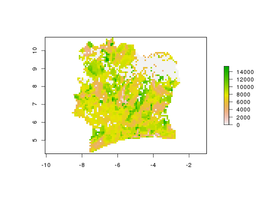

Query, subset, summarize, and download HarvestChoice indicators
Wrapper method to query, subset and/or aggregate HarvestChoice layers. This method
may also be used to summarize classified variables along intervals of continuous
variables, e.g. hcapi(var="AEZ16_CLAS", by="bmi"). Here AEZ16_CLAS is
a classified (categorical) raster, and bmi is a continuous raster, but the
request is valid. The dominant class of AEZ16_CLAS is returned along
intervals of bmi. Default interval breaks are used but custom intervals may
also be defined, e.g. hcapi(var="AEZ16_CLAS", by=list(bmi=c(0, 5, 10, 15, 20,
25))). The dominant class of a variable var is defined by
dominant(var). Layers may also be summarized over spatial points are
areas (passed as WKT representations using argument wkt). Use the
format argument to control the output format (see examples below).
hcapi(var, iso3 = "SSA", by = NULL, wkt = NULL, format = NULL, ...)
Arguments
- var
- character array of variable codes, passed to
getLayer - iso3
- character array of ISO3 country or region codes, passed to
getLayer - by
- character array of variable codes to summarize by, passed to
getLayer - wkt
- WKT representation of a spatial object (points, multipoints, or polygons, multipolygons)
- format
- output format, one of "data.table", "csv", "tif", "dta", "asc", "grd", "rds", else "plot" to plot the rasters, or "hist" to plot histogram and univariate statistics
- ...
- other optional arguments passed to
getLayer,genFile, or togenPlot, e.g.collapse=TRUE,as.list=TRUE,dir,pal.
Value
a data.table (or other formats) of HarvestChoice indicators optionally
summarized over by domains
Details
Sample API call: mean body mass index and cassava yield across provinces and districts of Tanzania
$ curl http://hcapi.harvestchoice.org/ocpu/library/hcapi3/R/hcapi
-d '{"var" : "cass_y", "iso3" : "CIV", "format" : "tif"}'
-X POST -H 'Content-Type:application/json'
/ocpu/tmp/x0bc1ac9bdf/R/.val /ocpu/tmp/x0bc1ac9bdf/stdout /ocpu/tmp/x0bc1ac9bdf/warnings /ocpu/tmp/x0bc1ac9bdf/source /ocpu/tmp/x0bc1ac9bdf/console /ocpu/tmp/x0bc1ac9bdf/info /ocpu/tmp/x0bc1ac9bdf/files/bmi--TZA.tfw /ocpu/tmp/x0bc1ac9bdf/files/bmi--TZA.tif /ocpu/tmp/x0bc1ac9bdf/files/bmi--TZA.tif.aux.xml /ocpu/tmp/x0bc1ac9bdf/files/DESCRIPTION /ocpu/tmp/x0bc1ac9bdf/files/README
GET all generated files in a ZIP archive
$ wget http://hcapi.harvestchoice.org/ocpu/tmp/x0bc1ac9bdf/zip
Sample API call: the method may be expanded to summarize classified (discrete) variables along continuous variables. For example the call below returns the dominant agro-ecological zone and average stunting in children under 5 over Ethiopia's provinces and generic elevation zones
$ curl http://hcapi.harvestchoice.org/ocpu/library/hcapi3/R/hcapi/json
-d '{
"var" : ["AEZ8_CLAS","stunted_moderate"],
"iso3" : "ETH",
"by" : ["ADM1_NAME_ALT","ELEVATION"]
}'
-X POST -H 'Content-Type:application/json'
See also
Examples
# Mean body mass index and cassava yield across provinces and districts of Tanzania x <- hcapi(c("bmi", "cass_y"), iso3="TZA", by=c("ADM1_NAME_ALT", "ADM2_NAME_ALT")) x#> ISO3 ADM0_NAME ADM1_NAME_ALT ADM2_NAME_ALT bmi #> 1: TZA United Republic of Tanzania Arusha Arumeru 21.2 #> 2: TZA United Republic of Tanzania Arusha Arusha 22.2 #> 3: TZA United Republic of Tanzania Arusha Karatu 21.2 #> 4: TZA United Republic of Tanzania Arusha Monduli 21.2 #> 5: TZA United Republic of Tanzania Arusha Ngorongoro 21.2 #> --- #> 124: TZA United Republic of Tanzania Unguja North North B 21.7 #> 125: TZA United Republic of Tanzania Unguja South Central 22.9 #> 126: TZA United Republic of Tanzania Unguja South South 23.2 #> 127: TZA United Republic of Tanzania Unguja Urban West West 23.2 #> 128: TZA United Republic of Tanzania buffer gridcell buffer gridcell NaN #> cass_y #> 1: NaN #> 2: NaN #> 3: NaN #> 4: NaN #> 5: NaN #> --- #> 124: NaN #> 125: NaN #> 126: NaN #> 127: NaN #> 128: NaN# To identify HarvestChoice indicator codes, query the entire catalog using category() category("poverty")#> category subcategory item code #> 1: Demographics Income and Poverty Rural RPOV_GINI #> 2: Demographics Income and Poverty Rural RPOV_GAP125 #> 3: Demographics Income and Poverty Rural RPOV_GAP200 #> 4: Demographics Income and Poverty Rural RPOV_PCEXP #> 5: Demographics Income and Poverty Rural RPOV_SEV125 #> 6: Demographics Income and Poverty Rural RPOV_SEV200 #> 7: Demographics Income and Poverty Rural RPOV_SD125 #> 8: Demographics Income and Poverty Rural RPOV_SD200 #> 9: Demographics Income and Poverty Rural RPOV_PD125 #> 10: Demographics Income and Poverty Rural RPOV_PD200 #> 11: Demographics Income and Poverty Rural RPOV_PT125 #> 12: Demographics Income and Poverty Rural RPOV_PT200 #> 13: Demographics Income and Poverty Total TPOV_GINI #> 14: Demographics Income and Poverty Total TPOV_GAP125 #> 15: Demographics Income and Poverty Total TPOV_GAP200 #> 16: Demographics Income and Poverty Total TPOV_PCEXP #> 17: Demographics Income and Poverty Total TPOV_SEV125 #> 18: Demographics Income and Poverty Total TPOV_SEV200 #> 19: Demographics Income and Poverty Total TPOV_SD125 #> 20: Demographics Income and Poverty Total TPOV_SD200 #> 21: Demographics Income and Poverty Total TPOV_PD125 #> 22: Demographics Income and Poverty Total TPOV_PD200 #> 23: Demographics Income and Poverty Total TPOV_PT125 #> 24: Demographics Income and Poverty Total TPOV_PT200 #> 25: Demographics Income and Poverty Urban UPOV_GINI #> 26: Demographics Income and Poverty Urban UPOV_GAP125 #> 27: Demographics Income and Poverty Urban UPOV_GAP200 #> 28: Demographics Income and Poverty Urban UPOV_PCEXP #> 29: Demographics Income and Poverty Urban UPOV_SEV125 #> 30: Demographics Income and Poverty Urban UPOV_SEV200 #> 31: Demographics Income and Poverty Urban UPOV_SD125 #> 32: Demographics Income and Poverty Urban UPOV_SD200 #> 33: Demographics Income and Poverty Urban UPOV_PD125 #> 34: Demographics Income and Poverty Urban UPOV_PD200 #> 35: Demographics Income and Poverty Urban UPOV_PT125 #> 36: Demographics Income and Poverty Urban UPOV_PT200 #> category subcategory item code #> label #> 1: Rural Gini '05 #> 2: Rural Poverty Gap $1.25 '05 #> 3: Rural Poverty Gap $2 '05 #> 4: Rural Poverty Per Cap. Exp. '05 #> 5: Rural Poverty Severity $1.25 '05 #> 6: Rural Poverty Severity $2 '05 #> 7: Rural Poverty Std. Dev $1.25 '05 #> 8: Rural Poverty Std. Dev $2 '05 #> 9: Rural Poverty density $1.25 '05 #> 10: Rural Poverty density $2 '05 #> 11: Rural Poverty hcr. $1.25 '05 #> 12: Rural Poverty hcr. $2 '05 #> 13: Gini '05 #> 14: Poverty Gap $1.25 '05 #> 15: Poverty Gap $2 '05 #> 16: Poverty Per Cap. Exp. '05 #> 17: Poverty Severity $1.25 '05 #> 18: Poverty Severity $2 '05 #> 19: Poverty Std. Dev $1.25 '05 #> 20: Poverty Std. Dev $2 '05 #> 21: Poverty density $1.25 '05 #> 22: Poverty density $2 '05 #> 23: Poverty hcr. $1.25 '05 #> 24: Poverty hcr. $2 '05 #> 25: Urban Gini '05 #> 26: Urban Poverty Gap $1.25 '05 #> 27: Urban Poverty Gap $2 '05 #> 28: Urban Poverty Per Cap. Exp. '05 #> 29: Urban Poverty Severity $1.25 '05 #> 30: Urban Poverty Severity $2 '05 #> 31: Urban Poverty Std. Dev. $1.25 '05 #> 32: Urban Poverty Std. Dev. $2 '05 #> 33: Urban Poverty density $1.25 '05 #> 34: Urban Poverty density $2 '05 #> 35: Urban Poverty hcr. $1.25 '05 #> 36: Urban Poverty hcr. $2 '05 #> label# Plot results for Mara province require(lattice) barchart(ADM2_NAME_ALT~bmi, data=x[ADM1_NAME_ALT=="Mara"], col="grey90")# Return mean cassava yield in Ivory Coast in GeoTIFF format r <- hcapi("cass_y", iso3="CIV", format="tif")#> Warning: colorTables valid for Byte type only in some drivers#> Warning: Unable to set color table# Plot the generated GeoTIFF raster (one band only) require(raster) plot(raster(r[2]))# The method may be expanded to summarize classified (discrete) variables along continuous # variables. For example the call below returns dominant agro-ecological zone and # average stunting in children under 5 over Ethiopia's provinces by elevation class x <- hcapi(c("AEZ8_CLAS", "stunted_moderate"), iso3="ETH", by=c("ADM1_NAME_ALT", "ELEVATION")) x#> ISO3 ADM0_NAME ADM1_NAME_ALT ELEVATION AEZ8_CLAS #> 1: ETH Ethiopia Addis Ababa (2e+03,5e+03] Trp. Hld. Sub-Humid #> 2: ETH Ethiopia Afar NA Arid #> 3: ETH Ethiopia Afar (3e+02,5e+02] Arid #> 4: ETH Ethiopia Afar (5e+02,9e+02] Semi-Arid #> 5: ETH Ethiopia Afar (9e+02,1e+03] Semi-Arid #> 6: ETH Ethiopia Afar (1e+03,2e+03] Trp. Hld. Semi-Arid #> 7: ETH Ethiopia Afar (2e+03,5e+03] Trp. Hld. Semi-Arid #> 8: ETH Ethiopia Amhara (5e+02,9e+02] Semi-Arid #> 9: ETH Ethiopia Amhara (9e+02,1e+03] Semi-Arid #> 10: ETH Ethiopia Amhara (1e+03,2e+03] Trp. Hld. Semi-Arid #> 11: ETH Ethiopia Amhara (2e+03,5e+03] Trp. Hld. Sub-Humid #> 12: ETH Ethiopia Benishangul Gumuz (5e+02,9e+02] Sub-Humid #> 13: ETH Ethiopia Benishangul Gumuz (9e+02,1e+03] Sub-Humid #> 14: ETH Ethiopia Benishangul Gumuz (1e+03,2e+03] Trp. Hld. Sub-Humid #> 15: ETH Ethiopia Benishangul Gumuz (2e+03,5e+03] Trp. Hld. Sub-Humid #> 16: ETH Ethiopia Dire Dawa (9e+02,1e+03] Semi-Arid #> 17: ETH Ethiopia Dire Dawa (1e+03,2e+03] Trp. Hld. Semi-Arid #> 18: ETH Ethiopia Dire Dawa (2e+03,5e+03] Trp. Hld. Semi-Arid #> 19: ETH Ethiopia Gambella (3e+02,5e+02] Sub-Humid #> 20: ETH Ethiopia Gambella (5e+02,9e+02] Sub-Humid #> 21: ETH Ethiopia Gambella (9e+02,1e+03] Sub-Humid #> 22: ETH Ethiopia Gambella (1e+03,2e+03] Sub-Humid #> 23: ETH Ethiopia Harari (9e+02,1e+03] Trp. Hld. Semi-Arid #> 24: ETH Ethiopia Harari (1e+03,2e+03] Trp. Hld. Semi-Arid #> 25: ETH Ethiopia Oromia (3e+02,5e+02] Semi-Arid #> 26: ETH Ethiopia Oromia (5e+02,9e+02] Semi-Arid #> 27: ETH Ethiopia Oromia (9e+02,1e+03] Semi-Arid #> 28: ETH Ethiopia Oromia (1e+03,2e+03] Trp. Hld. Sub-Humid #> 29: ETH Ethiopia Oromia (2e+03,5e+03] Trp. Hld. Sub-Humid #> 30: ETH Ethiopia SNNP (3e+02,5e+02] Sub-Humid #> 31: ETH Ethiopia SNNP (5e+02,9e+02] Sub-Humid #> 32: ETH Ethiopia SNNP (9e+02,1e+03] Sub-Humid #> 33: ETH Ethiopia SNNP (1e+03,2e+03] Trp. Hld. Sub-Humid #> 34: ETH Ethiopia SNNP (2e+03,5e+03] Trp. Hld. Humid #> 35: ETH Ethiopia Somali NA Arid #> 36: ETH Ethiopia Somali (3e+02,5e+02] Arid #> 37: ETH Ethiopia Somali (5e+02,9e+02] Arid #> 38: ETH Ethiopia Somali (9e+02,1e+03] Semi-Arid #> 39: ETH Ethiopia Somali (1e+03,2e+03] Trp. Hld. Semi-Arid #> 40: ETH Ethiopia Somali (2e+03,5e+03] Trp. Hld. Semi-Arid #> 41: ETH Ethiopia Tigray (5e+02,9e+02] Semi-Arid #> 42: ETH Ethiopia Tigray (9e+02,1e+03] Semi-Arid #> 43: ETH Ethiopia Tigray (1e+03,2e+03] Trp. Hld. Semi-Arid #> 44: ETH Ethiopia Tigray (2e+03,5e+03] Trp. Hld. Semi-Arid #> ISO3 ADM0_NAME ADM1_NAME_ALT ELEVATION AEZ8_CLAS #> stunted_moderate #> 1: 0.0 #> 2: 39.4 #> 3: 39.4 #> 4: 39.4 #> 5: 40.3 #> 6: 39.4 #> 7: 39.4 #> 8: 42.3 #> 9: 42.3 #> 10: 42.2 #> 11: 42.2 #> 12: 41.1 #> 13: 40.2 #> 14: 40.3 #> 15: 37.4 #> 16: 12.9 #> 17: 11.8 #> 18: 12.3 #> 19: 20.7 #> 20: 20.7 #> 21: 20.7 #> 22: 20.7 #> 23: 36.9 #> 24: 10.9 #> 25: 36.9 #> 26: 36.9 #> 27: 36.8 #> 28: 36.7 #> 29: 36.7 #> 30: 38.4 #> 31: 38.4 #> 32: 38.4 #> 33: 38.3 #> 34: 38.2 #> 35: 19.7 #> 36: 19.7 #> 37: 20.4 #> 38: 20.1 #> 39: 22.1 #> 40: 19.8 #> 41: 40.0 #> 42: 40.1 #> 43: 40.0 #> 44: 39.8 #> stunted_moderate# Mean harvested maize area summarized across a custom polygon x <- hcapi(var="maiz_h", wkt="POLYGON((-16.35819663578485006 15.36599264077935345, -15.42501860768386379 15.69472580976947462, -15.11749403024149174 14.83577785208561117, -16.13550642453347805 14.68731771125136376, -16.35819663578485006 15.36599264077935345))")#> Warning: grid has empty column/rows in dimension 1#> Warning: grid has empty column/rows in dimension 2x#> ISO3 maiz_h #> 1: SEN 330